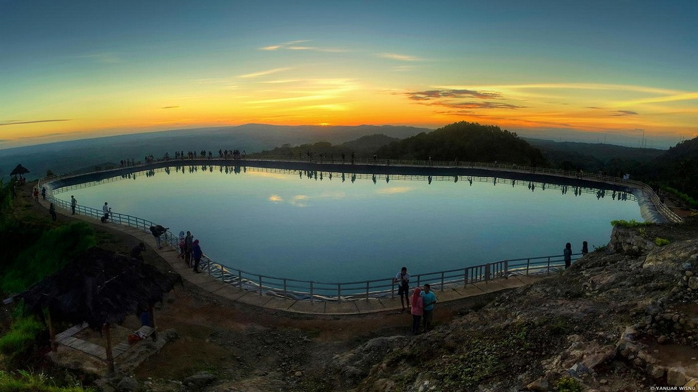
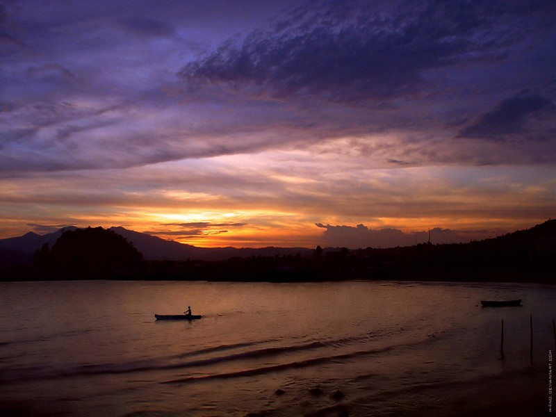
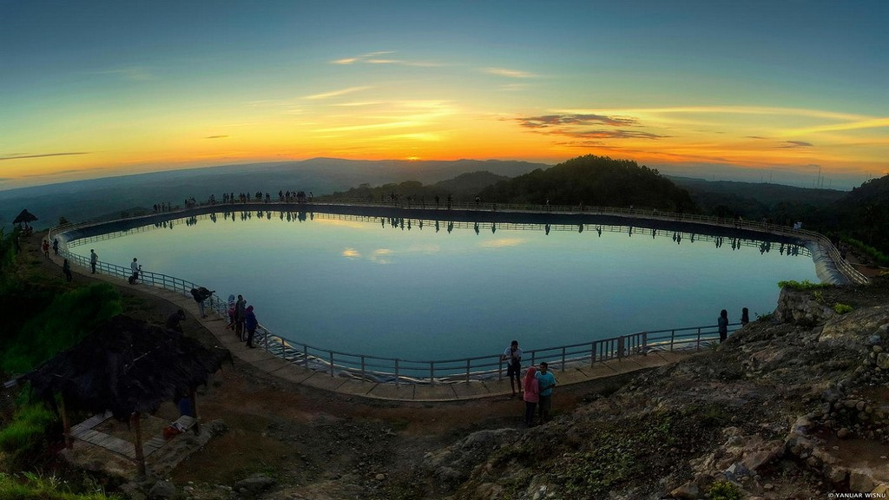
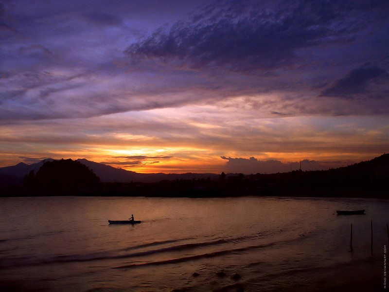

Museum Ullen Sentalu, terletak di daerah Pakem, Kaliurang, Kabupaten Sleman, adalah museum yang menampilkan budaya dan kehidupan para bangsawan Dinasti Mataram (Kasunanan Surakarta, Kesultanan Yogyakarta, Praja Mangkunegaran, dan Kadipaten Pakualaman) beserta koleksi bermacam-macam batik (baik gaya Yogyakarta maupun Surakarta).
Museum ini juga menampilkan tokoh raja-raja beserta permaisurinya dengan berbagai macam pakaian yang dikenakan sehari-harinya.
Di Museum Ullen Sentalu, dapat diketahui bagaimana para leluhur Jawa membuat batik yang memiliki arti dan makna yang mendalam di dalam setiap coraknya. Ada juga berbagai sejarah mengenai keadaan budaya Jawa kuno dengan segala aturannya. Keadaan museum yang dibangun dengan baik, mampu membuat pengunjung seperti terserap ke masa Jawa kuno yang mengagumkan.

 Close
Close Profil
Profil 


